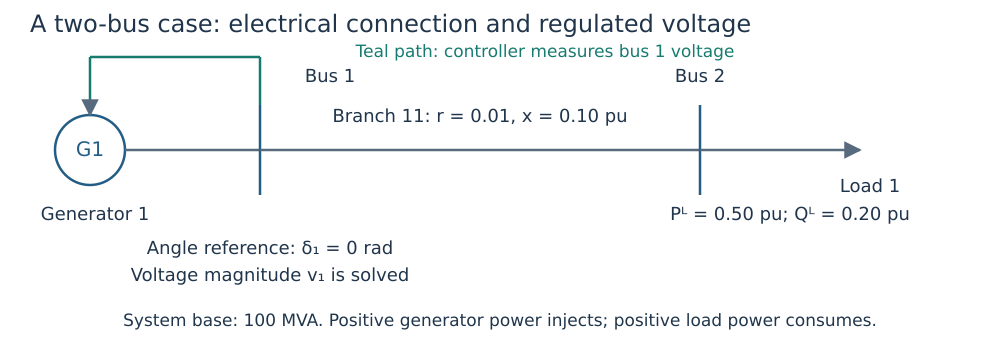

Your first OPF: build, solve, explain and check
Goal: construct a two-bus network, connect one generator to a Volt/VAR curve, and explain the resulting operating point. Every @example block below runs when the documentation builds. The blocks share one Julia session.
Prerequisites: installation and the meaning of active power $P$, reactive power $Q$, voltage magnitude $v$ and voltage angle $\delta$ in concepts. All powers below are per unit on a 100 MVA system base.
1. Draw the physical problem

Figure 1. Bus 1 fixes the angular reference and hosts generator 1. The controller measures bus 1 voltage. Bus 2 consumes 50 MW and 20 MVAr. There is no tap or shunt.
The branch resistance is $r=0.01$ pu, reactance is $x=0.10$ pu, and terminal apparent-power limit is 2 pu (200 MVA). Bus voltage bounds default to 0.9–1.1 pu. The reference flag fixes $\delta_1=0$; it does not fix $v_1=1$ or grant unlimited generator output.
using DroopOPF
network = ACNetwork(
[Bus(1; reference=true), Bus(2)],
[Branch(11, 1, 2;
resistance=0.01, reactance=0.10, thermal_limit=2.0)],
)
load = Load(1, 2; p=0.50, q=0.20)
generator = Generator(1, 1;
p_min=0.0, p_max=2.0, q_min=-1.0, q_max=1.0,
initial_p=0.50, initial_q=0.20)Constructor IDs identify devices: Load(1, 2; ...) means load ID 1 at bus ID 2. initial_p and initial_q are supplied generator reference values and numerical initialization information; they are not equality constraints on final output.
2. Give the generator a reactive-control law
The controller has reference $v^{ref}=1.0$ pu, lower/upper deadband edges $v^-=0.99$ and $v^+=1.01$ pu, deadband output $q^0=0$ pu and slope $m=0.05$ pu voltage per pu reactive power. The proportional gain is $1/m=20$ pu reactive power per pu voltage. The output is clipped to the supplied Q limits.
capability = ReactiveCapability(
p_min=0.0, p_max=2.0, q_min=-1.0, q_max=1.0)
schedule = VoltageSchedule(1.0; v_db_low=0.99, v_db_high=1.01)
control = VoltVarDroop(schedule, 0.05, capability; q_ref=0.0)
attachment = GeneratorControlAttachment(1, 1, RegulatedLocation(:bus, 1))
case = Case("teaching-two-bus";
base_power=100.0, base_frequency=50.0, network=network,
loads=[load], generators=[generator], controls=[control],
attachments=[attachment])The attachment joins generator ID 1 to control index 1, measuring bus 1. The Case keyword arguments name the power base (MVA), nominal frequency (Hz), network, loads, generators, controls and attachments. Nominal frequency does not introduce generator dynamics.
3. Solve the coupled equilibrium
The default base OPF minimizes
\[J=\sum_{g\in\mathcal G}\left[(P_g-P_g^{initial})^2 +10^{-3}(Q_g-Q_g^{initial})^2\right].\]
Here $\mathcal G$ is the generator set; $P_g,Q_g$ are active/reactive output, and the superscript $initial$ denotes the supplied generator reference values. $J$ is a weighted squared per-unit deviation, with no monetary units. The factor $10^{-3}$ is the implemented relative Q weight. AC balance, voltage, capability, branch limits and the reactive-control law constrain the solution. This is not a fuel-cost or loss-minimization objective. With one generator and a fixed curve, this case has very little dispatch freedom; it teaches coupled equilibrium and replay. The security example adds a second generator and shared dispatch decisions.
result = solve_opf(case;
smooth_epsilon=1e-5,
optimizer_attributes=Dict("print_level" => 0))
audit = validate_equilibrium(case, result)
@assert result.termination_status in (:LOCALLY_SOLVED, :ALMOST_LOCALLY_SOLVED, :OPTIMAL)
@assert audit.valid
(state_voltages_pu=round.(result.state.vm; digits=5),
generator_P_MW=round.(100 .* result.state.pg; digits=3),
generator_Q_MVAr=round.(100 .* result.state.qg; digits=3))(state_voltages_pu = [0.9784, 0.9508], generator_P_MW = [50.321], generator_Q_MVAr = [23.208])The numerical smoothing width smooth_epsilon is in pu voltage. It approximates corners of the optimization encoding; the independent audit checks the exact physical curve. Smaller widths are not automatically easier to solve.
4. Explain the numbers before accepting them
There is only one generator. Its active injection must exceed the load's $0.50$ pu by the branch's active loss. The reference-bus voltage is solved below the lower deadband edge so that the droop supplies positive reactive output. The downstream voltage also reflects the branch voltage drop.
state = result.state
active_loss_pu = sum(state.pg) - load.p
exact_Q_pu = droop_response(control, state.vm[1]; p=state.pg[1])
@assert active_loss_pu > 0
@assert state.vm[1] < schedule.v_db_low
@assert abs(state.qg[1] - exact_Q_pu) <= 1e-5
(active_loss_MW=round(100 * active_loss_pu; digits=3),
power_balance_residual=audit.power_balance_max,
exact_droop_residual=audit.droop_residual_max)(active_loss_MW = 0.321, power_balance_residual = 2.067790383364354e-14, exact_droop_residual = 7.771561172376096e-16)sum adds entries; abs takes absolute value; exact_Q_pu is the curve response at the solved measured voltage and active output. A small residual measures agreement with an equation, not closeness to zero generation or zero losses.
5. Check that the validator can reject a wrong point
Deliberately change reactive generation by 0.05 pu (5 MVAr) without changing voltages. This violates the frozen equilibrium; the solver is not called again.
bad_qg = copy(state.qg)
bad_qg[1] += 0.05
bad_state = ACState(copy(state.vm), copy(state.va), copy(state.pg), bad_qg)
bad_audit = validate_equilibrium(case, bad_state)
@assert !bad_audit.valid
(original_valid=audit.valid, corrupted_valid=bad_audit.valid)(original_valid = true, corrupted_valid = false)6. What to change next
- Evaluate
droop_response(control, 0.97; p=0.5)by hand using the Volt/VAR tutorial. It should return 0.4 pu reactive power. - Increase load reactive demand and observe the upstream/downstream voltages; solve and validate each changed case afresh.
- Compare this generator with
FreeQ,FixedQorAVRthrough explicit reactive assignments. - Before adding an outage, decide what is shared and allowed to respond.
This one-point result establishes neither outage security nor transient stability. The explicit construction and corruption check make it a reproducible starting point for your own model.